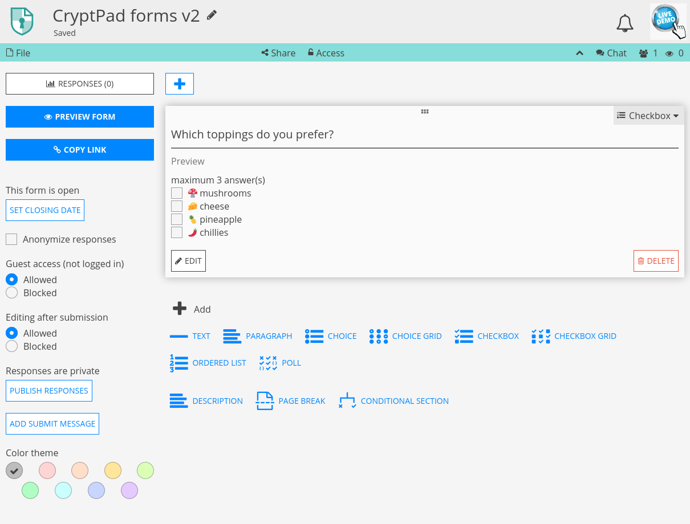

フォーム#

役割#
フォームは、他のCryptPadのアプリケーションと同じく、共同作業用・プライバシーの機能を備えています。それに加えて、フォームの使用時には、少し異なった要件も求められます。例えば、フォームに回答する人は、他の人の回答やフォーム自体ではなく、自分の回答だけを編集できるのでなければなりません。このため、フォームを共有する際のアクセス権限は他のアプリケーションの場合とは異なっています。フォームには、以下の3つの異なる権限があります。
作者：質問とフォームの設定を編集できます。
監察人：フォームが公開・未公開のどちらの状態でも回答を確認できます。
参加者：フォームに回答し、作者が回答を公開したときにのみ回答を確認できます。
役割を指定してフォームを共有する場合、例えば参加者にフォームを送信する場合は、 共有メニューから役割を選択した後で、連絡先を選択、またはリンクをコピーしてください。

注釈
参加者がフォームに回答する際には、ユーザーの一覧やチャット、共同セッションにユーザーが参加したことの通知が無効に設定されます。これは、誰かが回答時に監視しているという印象を与えることを防ぐことを狙いとしています。
フォームの編集#
最後の質問の 追加メニュー、またはそれぞれの質問の間にある から質問を追加できます。
質問は、各質問の 削除ボタンを使うと削除できます。
機能#
説明文#
マークダウンの構文を使ってフォームに文を追加できます。
ログイン済ユーザー
ツールバーの アイコンから、CryptDriveから画像を追加したり、新しい画像をアップロードしたりすることができます。
ページ分割#
フォームを複数のページに分割。参加者にのみ表示されます。
条件のセクション#
選択肢と チェックボックスの質問を使うと、質問のセクションを表示したり非表示にしたりできます。
フォームのエディターで、セクション間の 追加ボタン、またはフォームの一番下にあるリストから、 条件のセクションを追加してください。
セクションの前には少なくとも1つの 選択肢または チェックボックスを作成してください（そうでない場合はヒントが表示されます）。セクションの「前」に設定された質問のみが条件に使用できます。
追加ボタンを使ったりセクションの領域に質問をドラッグしたりして、説明文や設問などの内容を追加してください。
選択用メニューを使って条件を設定してください。「かつ」の条件は全て満たされていなければならず、「または」の条件はどれかが満たされていれば十分です。
参加者には、条件が真の場合にのみセクションが表示されます。
質問の種類#
文#
回答：1行の文
選択肢：
テキストの種類：文、番号、リンク、または電子メールアドレス
注釈
リンクと電子メールアドレスの場合、回答が適切な形式に合致しない場合は、質問を赤色でハイライトし、ユーザーにエラーを表示します。
段落#
回答 ：複数行の文
選択肢：
最大文字数の制限（既定で1000字）
選択肢#
回答：リストから1つ選択
選択肢：
選択肢を追加のボタン
Grab the handle and drag to re-order options
で選択肢を削除
選択式グリッド#
回答：1項目につき選択肢を1つ選択
選択肢：
選択肢を追加と 項目を追加のボタン
Grab the handle and drag to re-order items and options
で項目または選択肢を削除
日付#
回答：日時を選択
チェックボックス#
回答：リストから複数選択可
選択肢：
選択可能な選択肢の数
選択肢を追加のボタン
Grab the handle and drag to re-order options
で選択肢を削除
チェックボックス式グリッド#
回答：各項目に複数の選択肢
選択肢：
選択可能な選択肢の数（各項目につき）
選択肢を追加と 項目を追加のボタン
Grab the handle and drag to re-order items and options
で項目または選択肢を削除
番号付きリスト#
回答：一覧にある選択肢の優先順位
選択肢：
選択肢を追加のボタン
Grab the handle and drag to re-order options
で選択肢を削除
コンドルセ式：
バージョン5.3より回答をコンドルセ法で表示できます。シュルツェまたはランク付けのペアを選択して勝者を表示できます。詳細からは、それぞれの候補が勝利した数を確認できます。
投票#
回答：それぞれの選択肢に対し はい、 いいえ、 可のいずれか
選択肢の種類：
文
選択肢を追加のボタン
Grab the handle and drag to re-order options
で選択肢を削除
日
カレンダーから日付の選択肢を設定できます
時
選択肢をクリックすると、カレンダーから日時を設定できます
"複数の日時を追加"をクリックして複数の選択肢を選び、 全て追加から一度に全ての選択肢を追加できます。
フォームの設定#
上にある3つのボタンから、以下に直接アクセスできます：
回答（回答数） : 回答ページの表示を切り替えます
フォームをプレビュー：参加者用リンクを開きます
公開リンクをコピー：参加者用リンクをコピーします
注釈
フォームの作者用のリンク（編集用の権限あり）は、ツールバーの共有メニューから共有できます。
締切日時#
新しい回答の入力を締め切る日時
締切日時を設定ボタンを押すと、カレンダーから日時を選択できます
締切日時が設定されている場合、締切日時を削除から削除できます。
回答を匿名化#
CryptPadにログインしているかどうかに関わらず、全回答が匿名化されます。チェックしていない場合でも、ゲストによるアクセスが許可されていれば、ログイン済のユーザーは匿名で回答することができます（以下を参照）。
ゲストによるアクセス#
ブロック：CryptPadのアカウントにログインしているユーザーだけが回答できます。
許可：登録していないユーザーも回答できます。ログイン済のユーザーは匿名による回答を選択できます。
送信後の編集#
一回のみ：参加者はフォームに一度のみ回答できます。送信後に回答を編集したり削除したりすることはできません。
一回のみ（編集、削除を許可）：参加者はフォームに一度だけ回答できますが、送信後に回答を編集したり削除したりすることができます。
複数回：参加者はフォームに何度も回答できます。送信後に回答を編集したり削除したりすることはできません。
複数回（編集、削除を許可）：参加者はフォームに何度も回答できます。送信後に回答を編集したり削除したりすることができます。
注釈
ゲストによるアクセスが許可されている場合、ブラウザーのプライベートウィンドウでフォームを開いたり、ブラウザーのクッキーを削除したりすると、未登録のユーザーは"一回のみ"のフォームに何度も回答することができます。
回答を公開#
フォームに回答を送信した参加者に、結果の閲覧を許可。一度許可すると、これまで登録された回答も、今後登録される回答もともに公開されます。
警告
いったん回答が公開されると、非公開に戻すことはできません。
メッセージを送信#
参加者がフォームを送信した後で表示されるユーザー定義のメッセージを追加できます。
テーマ色#
フォームの背景色と強調用の色を選択できます。
回答#
新しい回答に関する通知は、統合された通知からフォームの所有者に送信されます。
高度な使用事例#
アクセスリストを使った匿名の回答#
匿名の回答の機能とアクセスリストを使うと、既知のユーザーのグループを対象に匿名のアンケートを行うことができます。
フォームへのアクセスには、参加者はアクセスリストにあるアカウントにログインしているがあります（直接または属するチームのどちらかにて）。
匿名の回答が許可されている場合、回答が特定のユーザーのグループによるものであることをアクセスリストで保証しつつ、参加者は匿名で回答できます。
インポート/エクスポート#
フォームのドキュメントは JSON フォーマットでエクスポート、インポートできます。
回答をエクスポートする場合は、 回答のページから2つの方法を選択できます。
CSVまたはJSONファイルとしてエクスポートする場合は エクスポートボタンをクリック
ドライブに追加できるスプレッドシートとしてエクスポートする場合はシートにエクスポートボタンをクリック
注釈
スプレットシートのドキュメントには、スプレッドシートを作成した時点から自動的にデータが追加されますが、エンドツーエンド暗号化の仕組み上、スプレッドシートの内容は、新しい回答が記録されても自動的にはアップデートされません。